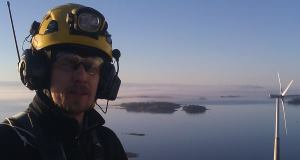

Turvallisesti korkealle!
Hard Access Technique Oy on erikoistunut tuottamaan putoamissuojaus-, köysityöskentely- ja henkilöevakuointikoulutuksia eri teollisuuden alojen, kiinteistöhuollon, sekä viranomaistoiminnan tarpeisiin. Hard Access Technique Oy tuottaa koulutukset joko suoraa loppuasiakkaalle tai alihankintana yhteistyökumppaneiden kautta.
Hard Access Technique Oy suorittaa myös putoamissuojausjärjestelmien asennuksia, ongelmapuiden kaatoa, sekä vaikeasti saavutettavissa kohteissa teollisuuden ja kiinteistöhuollon töitä.
Henkilö yrityksen toiminnan takana on Pasi Nissilä. Nissilä on toiminut palo- ja pelastustoimen palveluksessa palomies-sairaankuljettajan, pelastussukeltajan, paloesimiehen sekä opettajan tehtävissä vuosien 1995- 2010 ajan. Tammikuusta 2011 lähtien Nissilä on toiminut kokoaikaisena Hard Access Technique Oy:n kouluttajana.
